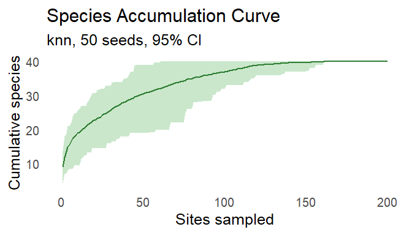

species accumulating in the neighbourhood
spacc builds species accumulation curves that add sampling sites in the order of their distance from a starting point, such as plots added one by one outward from a point in a survey region, and shows how the curve changes with that point.
The classical curve of specaccum() in vegan adds sites in random order, without using their spatial arrangement. spacc samples a focal point in continuous space, ranks every site by its distance from that point and counts the new species along the ranking. It repeats this from many focal points in C++ with RcppParallel, so the curve carries a confidence ribbon showing how richness depends on where the expansion begins. spacc also computes the random-order curve, so you can compare the two and judge how much the spatial arrangement of your sites matters.
spacc supports:
-
Seven expansion orders. Fixed-focus nearest neighbours (
knn), nearest-centroid expansion (kncn), a nearest-neighbour walk (nn_walk), distance- and direction-weighted growth (gaussian,cone), the classical random order (random) and the data order (collector). -
Diversity beyond richness. Hill numbers, beta diversity with turnover and nestedness, coverage-based rarefaction, and phylogenetic and functional diversity accumulate along the same spatial order;
spaccHill()is the entry point. -
Geographic coordinates.
distance = "haversine"works on longitude and latitude with no projection step, and an sf polygon throughfocal_domainrestricts the focal points to a known study boundary. - Large site sets. Above 500 sites the nearest-neighbour methods switch from a distance matrix to a k-d tree from nanoflann, or a ball tree for haversine distances (Methods and Algorithms).
-
Fitting and comparing curves.
extrapolate()fits asymptotic richness models, including Michaelis-Menten, Lomolino, Weibull, logistic and extreme value models, andcompare()tests two curves by permutation, bootstrap or area under the curve.
Existing curves from vegan::specaccum() enter through as_spacc(), so they share the plotting and comparison methods. Each method follows a published definition, listed with its reference in the DESCRIPTION and in Methods and Algorithms, and a methods section can cite those papers for the estimators and spacc for the spatial ordering.
Installation
Install the released version from CRAN. Windows and macOS get a binary that needs no build tools:
install.packages("spacc")The development version compiles C++ code. Install the build tools for your operating system first:
| Operating system | Build tools |
|---|---|
| Windows | Rtools matching your R version |
| macOS | Run xcode-select --install in Terminal |
| Debian / Ubuntu | Install r-base-dev
|
Check that R can find the compiler:
pkgbuild::has_build_tools(debug = TRUE)Then install spacc from GitHub:
# install.packages("pak")
pak::pak("gcol33/spacc")The build needs GNU make and a C++17 compiler, which the build tools above provide. The nanoflann library ships as a header inside the package, and RcppParallel brings its own threading library, so no system libraries are needed.
Usage
- Build a spatial accumulation curve with
spacc()from a site-by-species matrix and the site coordinates. - Build the random-order curve with
method = "random"and test the difference withcompare(). - Fit an asymptote with
extrapolate(), or follow other diversity measures withspaccHill()andspaccBeta().
The input is a matrix or data frame with one row per site and one column per species, holding presence-absence or abundance, and the site coordinates as a data frame with columns x and y or an sf object of points. Coordinates are planar by default; distance = "haversine" reads x and y as longitude and latitude in degrees.
In the example below, each of 40 species occurs around its own position along the x axis, so neighbouring sites share species:
library(spacc)
set.seed(1)
coords <- data.frame(x = runif(200), y = runif(200))
centres <- runif(40)
prob <- outer(coords$x, centres, function(x, m) exp(-(x - m)^2 / 0.02))
species <- matrix(rbinom(length(prob), 1, prob), nrow = 200)
sac <- spacc(species, coords)
plot(sac)
The line is the mean over 50 focal points, and the ribbon holds 95% of the curves from single focal points.
Adding the sites in random order instead reaches the species far faster, because it ignores that neighbouring sites share species:
sac_random <- spacc(species, coords, method = "random")
compare(sac, sac_random)
#> Comparison: sac vs sac_random
#> ----------------------------------------
#> Method: permutation (n=999)
#> AUC difference: -1028.1 (p < 0.001***)
#> Saturation: sac at 90 sites, sac_random at 10 sites
#>
#> sac_random saturates faster.Diversity beyond richness
Each diversity function carries the spatial ordering through to a different measure, with map = TRUE for per-site values and as_sf() for GIS output:
hill <- spaccHill(species, coords, q = c(0, 1, 2), map = TRUE)
plot(hill, type = "map", q = 0)
beta <- spaccBeta(species, coords, index = "sorensen")
plot(beta, partition = TRUE)Diversity Accumulation covers Hill numbers, the alpha, beta and gamma partition, and phylogenetic and functional diversity.
Grouped and spatiotemporal accumulation
groups splits the species into groups, such as native and alien species or families, and accumulates each under the same spatial site order. time adds a temporal axis to the distance, weighted against space with w_space and w_time:
sac_grouped <- spacc(species, coords, groups = status, seed = 42)
plot(sac_grouped, facet = TRUE)
sac_st <- spacc(species, coords, method = "nn_walk",
time = site_years, w_space = 1, w_time = 0.5)Community Assembly and Turnover applies grouped curves to community structure.
Documentation
Start with Getting Started with spacc: one path from a site-by-species matrix to spatial and random-order curves, their comparison and extrapolation.
- Diversity Accumulation: Hill numbers, beta diversity, phylogenetic and functional accumulation.
- Extrapolation and Species-Area Models: asymptotic models and total richness beyond the sampled sites.
- Richness Estimation and Completeness: total richness from frequency counts and sample completeness.
- Rarefaction and Standardization: curves standardized to common effort or coverage.
- Spatial Analysis: Endemism, Fragmentation, and SAR: endemism-area curves, fragmentation and species-area relationships.
- Community Assembly and Turnover: grouped curves, turnover and null models of the sampling design.
- Methods and Algorithms: the expansion methods, distance metrics and nearest-neighbour backends.
- Full reference: every function, grouped by job.
Getting help
Questions and bug reports go to the GitHub issues. A bug report is easiest to act on with a small reproducible example, for instance made with reprex.
Contributing
Pull requests are welcome; see the contributing guide.
Support
“Software is like sex: it’s better when it’s free.” — Linus Torvalds
I’m a PhD student who builds R packages in my free time because I believe good tools should be free and open. I started these projects for my own work and figured others might find them useful too.
If this package saved you some time, buying me a coffee is a nice way to say thanks. It helps with my coffee addiction.
Acknowledgements
The k-d tree search uses nanoflann by Marius Muja, David G. Lowe and Jose Luis Blanco, bundled in inst/include.
License
spacc is licensed under MIT. The bundled nanoflann library is licensed under BSD; inst/COPYRIGHTS lists its copyright holders.
Citation
Colling G (2026). _spacc: Fast Spatial Species Accumulation Curves_.
doi:10.32614/CRAN.package.spacc
<https://doi.org/10.32614/CRAN.package.spacc>. R package version
0.11.0, <https://gillescolling.com/spacc/>.BibTeX: